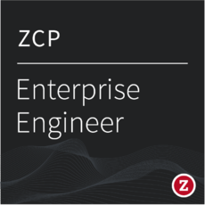
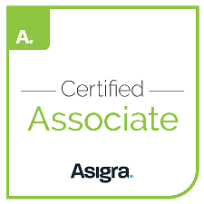

Certifications
CompTIA Network+

Microsoft Certified: Azure Fundamentals
Microsoft 365 Certified: Fundamentals
MTA: Mobility and Device Fundamentals
Zerto Certified Professional

ZCP Enterprise Engineer

Asigra Certified Associate
Veeam Technical & Sales Professional
Google Digital Garage
Google Analytics Professional
cPanel Certified Professional